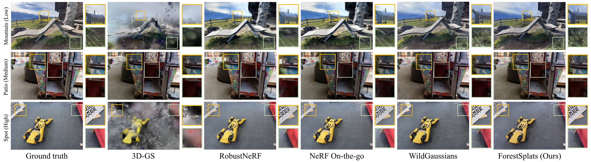
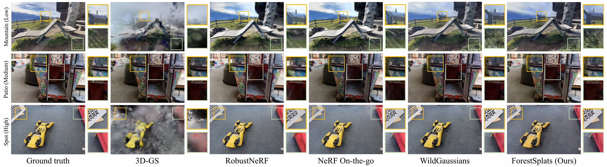

Abstract
Abstract
Recently, 3D Gaussian Splatting (3DGS) has emerged showing real-time rendering speeds and high-quality
results in static scenes. Although 3DGS show effective in static scenes, their performance significantly
degrades in the real-world environments due to transient objects, lighting variations, and large levels
of occlusion. To tackle this, existing methods estimate occluders or transient elements by leveraging
pre-trained models or integrating additional transient field pipelines. However, these methods still
suffer from two defects: 1) Utilizing semantic features from Vision Foundation model (VFM) cause
additional computational cost or during optimization. 2) Transient field struggles to define clear
boundaries for occluders due to lack of explicit transient modeling. To address these problem, we
propose
ForestSplats, an novel approach that leverages deformable transient field and hybrid masking
strategy to effectively decompose static scenes from transient distractors. We designed the transient
field to be deformable, capturing per-view transient elements. Furthermore, we introduce a hybrid
masking
strategy that refines the boundaries of occluders by leveraging photometric error maps and percentage of
outlier. Additionally, we propose an uncertainty-aware densification to prevent unnecessary Gaussians
from blurring the boundaries of occluders. Through extensive experiments across several benchmark
datasets,
we demonstrate ForestSplat not only outperforms state-of-the-art reconstruction quality, but also show
efficiency for distractor-free novel view synthesis.
 Conclusion
Conclusion
We introduce ForestSplats, a novel framework that leverages a deformable transient field and a superpixel-aware mask to effectively remove distractors from static fields. Furthermore, we introduce uncertainty-aware densi- fication to enhance rendering quality to avoid generate static gaus- sians on the boundaries of distractors during optimization. Extensive experiments on several datasets demonstrate that our method show competitive performance compared to existing methods without a pre-trained model and excessive memory usage.


 
